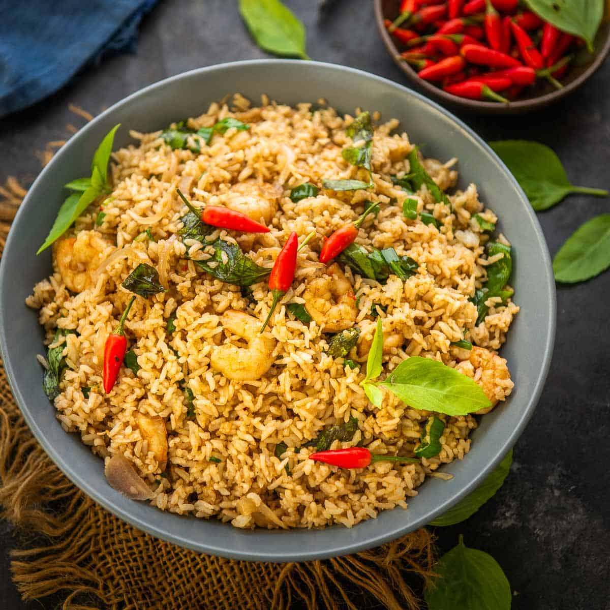

Go back
Easy Fried Rice

Description
A quick fried rice recipe like you get at your favorite Chinese
restaurant. Leftover rice, plus a couple of eggs, baby carrots, peas, and
soy sauce is all you need. Garnish with sliced green onions, if desired.
Ingredients:
- 3 cup chopped baby carrots
- 1 cup frozen green peas
- 2 tablespoons vegetable oil
- 1 clove garlic, minced, or to taste (Optional)
- 2 large eggs
- 3 cups leftover cooked white rice
- 1 tablespoon soy sauce, or more to taste
- 2 teaspoons sesame oil, or to taste
Steps:
- Assemble Ingredients.
-
Place carrots in a small saucepan and cover with water. Bring to a low
boil and cook for 3 to 5 minutes. Stir in peas, then immediately drain
in a colander.
-
Heat a wok over high heat. Pour in vegetable oil, then stir in carrots,
peas, and garlic; cook for about 30 seconds. Add eggs; stir quickly to
scramble eggs with vegetables.
-
Stir in cooked rice. Add soy sauce and toss rice to coat. Drizzle with
sesame oil and toss again.
- Serve hot and enjoy!